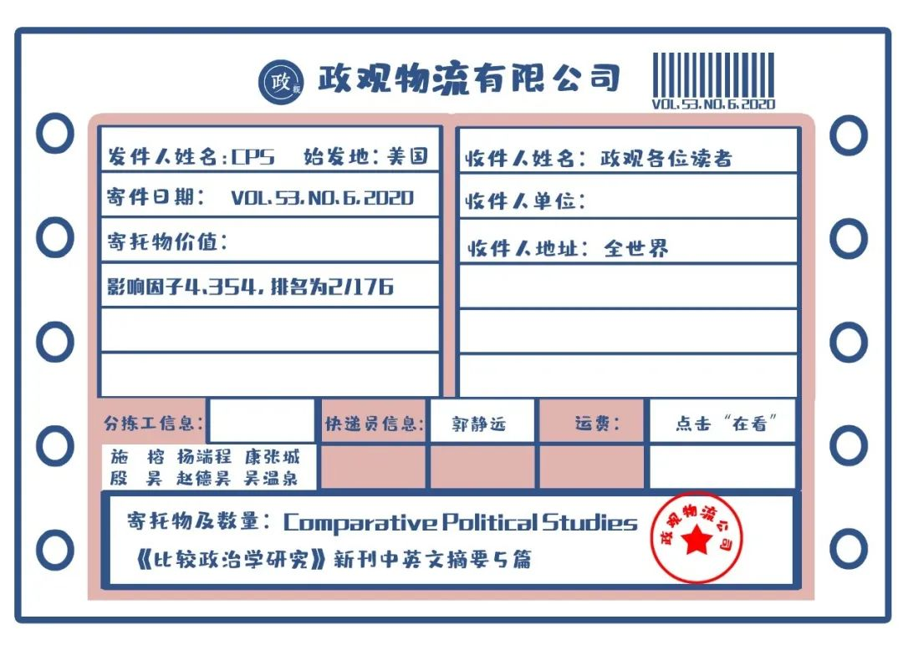
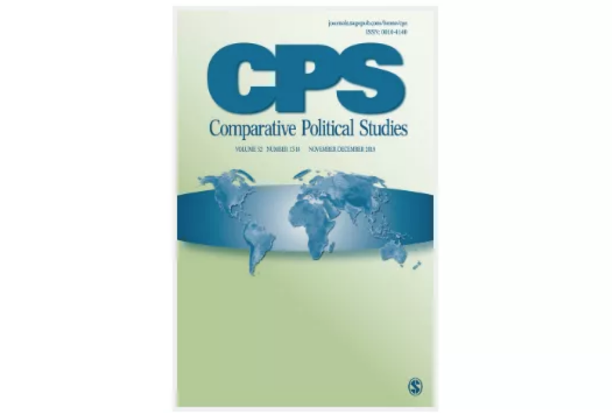

政观快递 | Comparative Political Studies, Volume 53, No 6, 2020
原创 政文观止
政文观止Poliview
微信号 zhengwenguanzhi
功能介绍 从一群年轻人的视角出发，专业、专注、专解海内外比较政治经济研究的前沿佳作。
__发表于
期刊简介： 《比较政治研究》（CPS）杂志一年出版14期，是从事跨国和国内比较政治研究的专业杂志，它致力于在前沿方法、理论和实证研究等领域进行深度分析，其过去5年的影响因子为4.262 在176个政治科学类期刊中排名第12位。
编者按： 摘要编译主要由各高校在读硕士生和博士生自愿组织进行。受学生学识及翻译水平所限，译文可能有诸多不当之处，还望读者们见宥，也欢迎留言讨论。此外，由于版权所限，需要阅读原文的读者请通过所在学校/机构的图书馆数据库或其他途径访问下载。

期刊目录
1. When Does Information Influence Voters? The Joint Importance of Salience and Coordination
2. Middle Class Without a Net: Savings, Financial Fragility, and Preferences Over Social Insurance
3. Patterns of Regime Breakdown Since the French Revolution
4. The Dilemma of Dissent: Split Judicial Decisions and Compliance With Judgments From the International Human Rights Judiciary
5. The Dynamics of Labor Militancy in the Extractive Sector: Kazakhstan’s Oilfields and South Africa’s Platinum Mines in Comparative Perspective

1.信息何时影响投票？
突出与协调共同的重要性
题目： When Does Information Influence Voters? The Joint Importance of Salience and Coordination ****
作者： Claire Adida，加州大学圣地亚哥分校政治学副教授；Jessica Gottlieb，德州农工大学布什政府与公共服务学院助理教授；Eric Kramon，乔治华盛顿大学政治学和国际事务系助理教授
摘要： 学者们认为，获取关于政客在规划表现方面的信息可以帮助选民奖励表现良好者，惩罚表现不佳者。但在信息源依赖集体选举行为的地方，若对他人是否会做出相同的选择没有信心，选民可能就不会投票给某位强势的立法者。本文认为，关于政客表现的信息会在两个前提下影响投票行为：选民首先必须重视这些信息，其次相信选区内的其他人也同样重视。在贝宁的一次立法选举的实地实验中，只有信息与选民相关并在社区广泛传播时，选民才会奖励政客的良好规划表现。另外，对积极立法表现信息的获取实际上降低了对执政党的投票份额。这些结果表明，信息的突出性与选民间的协调性在塑造恩庇民主政治中信息的影响时，具有共同的重要性。
Scholars argue that access to information about a politician’s programmatic performance helps voters reward good performers and punish poor ones. But in places where resources are made conditional on collective electoral behavior, voters may not want to defect to vote for a strong legislative performer if they do not believe that others will. We argue that two conditions must hold for information about politician performance to affect voter behavior: Voters must care about the information and believe that others in their constituency care as well. In a field experiment around legislative elections in Benin, voters rewarded good programmatic performance only when information was both made relevant to voters and widely disseminated within the electoral district. Otherwise, access to positive legislative performance information actually lowered vote share for the incumbent’s party. These results demonstrate the joint importance of Salience and voter coordination in shaping information’s impact in clientelistic democracies.
2. 没有“安全网”的中产阶级：
存款、财务脆弱性和社会保障偏好
题目： Middle Class Without a Net: Savings, Financial Fragility, and Preferences Over Social Insurance
作者： Jacob Gerner Hariri, 哥本哈根大学政治学系教授；Amalie Sofie Jensen, 普林斯顿大学伍德罗·威尔逊公共与国际事务学院经济学系博士后研究员；David Dreyer Lassen,哥本哈根大学经济学教授、社会数据科学中心创始主任、经济行为与不平等中心联合副主任、丹麦独立研究基金主席
摘要： 本文证明了区分流动资产和不动资产对理解选民如何形成社会保障偏好的重要性。尽管许多家庭的收入和财富值都很高，但因为他们几乎没有活期存款，因此他们的财务状况仍然是脆弱的。本文假设并且通过实证证明，大量选民虽然富有且拥有高收入，但仍然极力支持社会保障政策。因为他们在收入受到冲击时，通过存款实现自保的能力有限。本文的实证分析基于丹麦的一个新数据集，该数据集将行政数据和对个人金融资产的高质量评估、政治偏好的调查方法相结合。此外，利用欧洲社会调查中其他国家的数据，本文证明这一研究结果具有更广泛的普适性，而不仅限于解释丹麦个案。
In this article, we show that it is crucial to distinguish between liquid and illiquid wealth to understand how voters form preferences toward social insurance. Many households are financially fragile despite having high incomes and wealth, because they hold little liquid savings. We hypothesize, and show empirically, that this implies that a substantial group of voters show strong support for social insurance policies despite being wealthy and having high incomes, because of their limited ability to self-insure through own savings in case of an income shock. Our empirical analysis is based on a novel dataset from Denmark, which combines administrative data with high-quality measures of individual financial assets and survey measures of political preferences. Using data for other countries from the European Social Survey, we find evidence that our results hold more generally and are not specific to the Danish context.
3. 法国大革命后政权崩溃的形式
题目： Patterns of Regime Breakdown Since the French Revolution ****
作者： Vilde Lunnan Djuve，奥胡斯大学政治学系博士生；Carl Henrik Knutsen，奥斯陆大学政治学系教授；Tore Wig，奥斯陆大学政治学系副教授
摘要： 本文通过定义对选拔领导人正式和非正式的重要规则整理了关于政权存续时间的细粒度数据集，这一数据集由1789年到2016年间197个国家和地区的2000多个政权的数据组成。本文强调现代历史上政权崩溃的频率与崩溃的特定形式表现出周期性特征而非遵循单调的形式。总而言之，政权最常见的崩溃形式是政变和在任者引导下的政体转型。此外，本文的稳健性检验部分表明低收入、慢增长或负增长、中等民主水平的政权更容易发生崩溃。然而通过拐点分析，本文指出现代历史上政权崩溃的风险存在巨大的周期性并且前述的解释因素与特定时期的崩溃密切相关。在不同的崩溃形式中，低收入容易激起大众抗议进而导致政权崩溃，而中等的民主水平则容易出现政变导致的崩溃和在任者引导下的转型。
We present a temporally fine-grained data set on regimes, defined as the formal and informal rules essential for selecting leaders. The data set comprises more than 2,000 regimes from 197 polities, 1789 to 2016. We highlight how the frequency of breakdowns and particular modes of breakdown have followed cyclical rather than monotonic patterns across modern history. The most common breakdown modes, overall, are coups and incumbent-guided regime transformations. Furthermore, we report robust evidence that low income, slow or negative growth, and intermediate levels of democracy predict a higher likelihood of regime breakdown. Yet, by running change-point analysis we establish that breakdown risk has cycled substantively across periods of modern history, and the aforementioned explanatory factors are more clearly related to breakdown during certain periods. When disaggregating different breakdown modes, low income is related to, for example, breakdown due to popular uprisings, whereas intermediate democracy levels clearly predict coup- induced breakdowns and incumbent-guided transitions.
4. 异议的困境: 存在分歧的司法判决
和 对国际人权司法机构的判决的遵守
题目： The Dilemma of Dissent: Split Judicial Decisions and Compliance With Judgments From the International Human Rights Judiciary ****
作者： Daniel Naurin，挪威奥斯陆大学政治学教授; Øyvind Stiansen，挪威奥斯陆大学法学院博士后研究员
摘要： 法院与司法遵守者之间的相互依存是司法权的基本特征。那些通过法院判决巩固其权利和利益的行动者可能将这些判决作为法律武器，同时有助于确保法院判决得到有效执行。作者认为，与全体一致通过的判决相比，包含不同意见的判决的效力较弱，原因是不同意见削弱了对判决法律权威的感知。利用来自欧洲和美洲的国际人权司法机构的数据，作者提供了有关司法异议与遵守之间存在负相关关系的证据。作者的研究结果对法院的制度设计、法院处理遵守难题的能力以及了解使国际司法得以有效保护人权的条件等问题具有重要意义。
The mutual dependence between courts and their compliance constituencies is a fundamental feature of judicial power. Actors whose rights and interests are reinforced by court decisions may use these as legal ammunitions while contributing to ensuring that court decisions are effectively implemented. We argue that judgments that contain dissenting opinions are less powerful in this regard, compared with unanimous decisions. The reason is that dissent reduces the perceived legal authority of the judgment. Using data from the international human rights judiciaries in Europe and the Americas, we provide evidence of a negative relationship between judicial dissent and compliance. Our findings have important implications for questions relating to the institutional design of courts, for courts’ ability to manage compliance problems, and for understanding the conditions for effective international judicial protection of human rights.
5. 采掘业中劳资暴力纠纷的动因：
比较视野中的哈萨克斯坦油田和南非铂金开采
题目： The Dynamics of Labor Militancy in the Extractive Sector: Kazakhstan’s Oilfields and South Africa’s Platinum Mines in Comparative Perspective ****
作者： Allison D. Evans, 内华达大学政治学系助理教授；Rudra Sil，宾夕法尼亚大学政治学系教授
摘要： 本文研究了为什么哈萨克斯坦的油田和南非的铂金带在两种不同类型的政权下，其劳资暴力纠纷的程度却很相似。本文还探讨了导致2011年扎瑙津和2012年马里卡纳屠杀的共同动因。基于最大差异体制的比较，研究假说突显了劳资关系的挑战，其中开采地点的固定、价格的波动以及全球化经济中股东的压力共同提升了企业、劳工和国家的风险。同样重要因素还有，与静态工会相关的现有协商渠道受到了阻碍。这些必要的条件共同导致了哈萨克斯坦和南非采掘业暴力水平的增加。为了解释扎瑙津和马里卡纳大屠杀，还需要考虑时机和次序。两次僵持都发生在罢工浪潮的后期，这促使失去耐心的国家和商业精英批评抗议活动是“犯罪”行为，并部署安全人员实施暴力镇压。
This article investigates why, in two very different regimes, similarly high levels of labor militancy are evident in Kazakhstan’s oilfields and South Africa’s platinum belt. It also explores the common dynamics leading up to the massacres at Zhanaozen (2011) and Marikana (2012). The hypothesis-generating most different systems comparison highlights the challenges of labor relations where extraction at fixed sites combines with volatile prices and shareholder pressures in a globalized economy to raise the stakes for business, labor, and state. Also significant are blockages in existing channels for bargaining linked to quiescent unions. These jointly necessary conditions account for increased militancy in extractive industries in Kazakhstan and South Africa. To account for the Zhanaozen and Marikana massacres, timing and sequence are considered. Both standoffs came later in the strike wave, prompting impatient state and business elites to criticize the protests as “criminal” acts, and priming security personnel to employ violent repression.
编译/审校：施 榕 殷 昊 杨端程 赵德昊 吴温泉
编辑：郭静远
【政文观止Poliview】系头条号签约作者